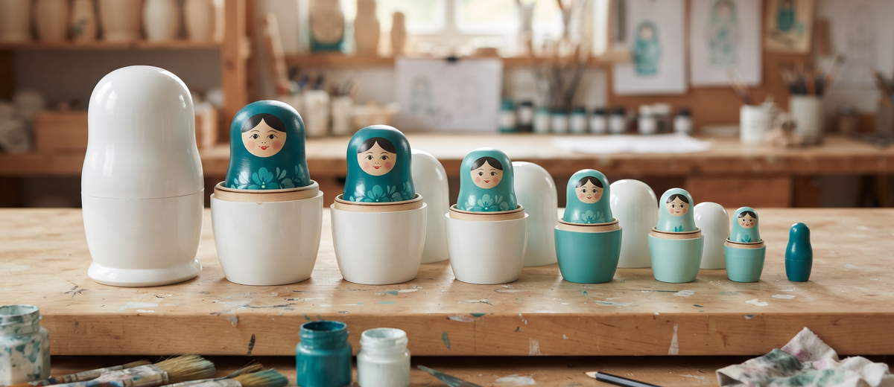

Usage
python3 main.py FILE_PATH [-v] [-o OUTPUT]Requirements: python-magic>=0.4.27 and pandas>=2.2.0.
Parameters
| Parameter | What the README says |
|---|---|
FILE_PATH | Path to the file to analyze. |
-h | Show help message and exit. |
-v, --verbose | Enable verbose logging. |
-o, --output | Output file for the report in CSV format. Default: file_analysis_report.csv. |
Verified behavior
- A missing input file exits 1.
- The report CSV carries the file path, file size, detected file type, and entropy.
- The output file is not optional in practice: because
-ohas a default, every successful run writes a CSV in the working directory unless-onames another file, and nothing is printed instead.

Stated limits
The CSV report is written on every successful run whether or not -o is supplied, because -o carries the default file_analysis_report.csv. Live run not possible in the documenting environment: the magic package is not installed there and installs are not permitted in that wave. The parameter list above is taken from the argument parser in main.py, and the file compiles cleanly.